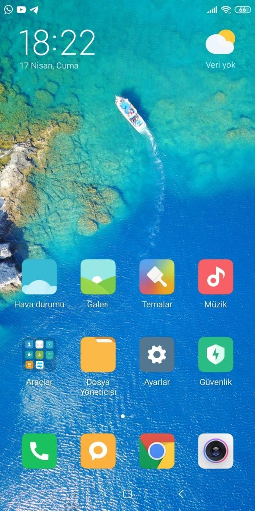
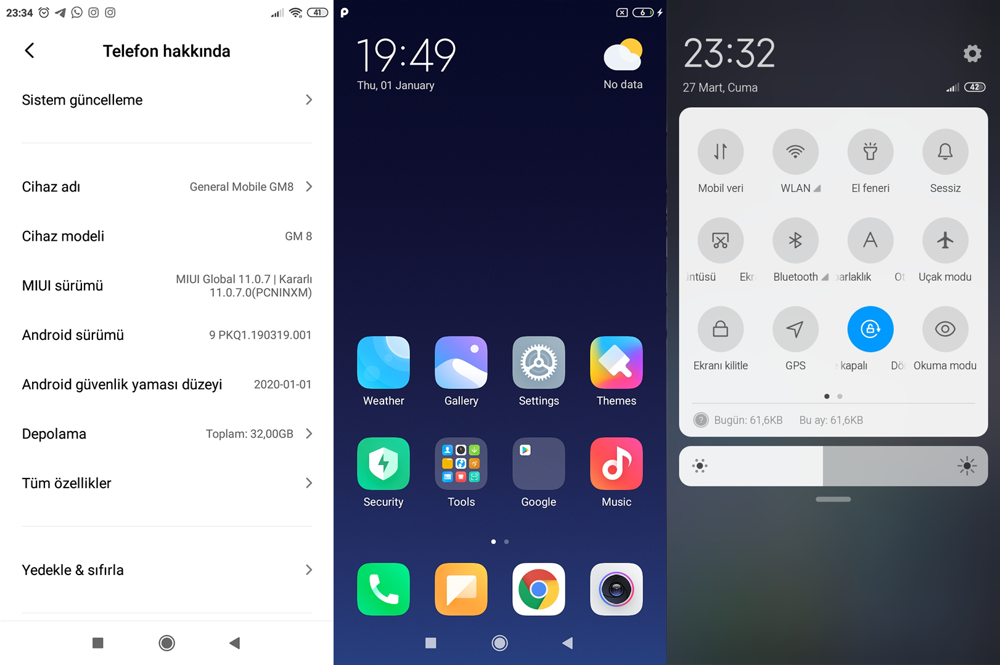
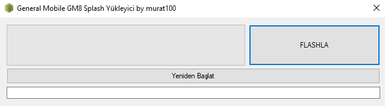

General Mobile GM8 MIUI Rom İndir
Sürümleri görüntülemek için istediğiniz
MIUI sürümünün üstüne gelip
tıklatın. GM 8 için miui yüklemek için stabil sürümler
önerilir. Stabil olmayan sürümler gm 8 için düzgün
çalışmayabilir. Yeni ve eski sürümlerin arasında gm 8 miui
yükleyici farkları barındırabilir. gm8 için miui yüklemeden
önce kurulum talimatlarını okumayı unutmayın.
GM 8 için MIUI sürümleri: 2
Stabil durumda olan MIUI sürümleri: 1 GM 8 MIUI Tool sürümü: 3.0-zloomRom hakkında
- A ve B slotlarına kurulum yapar
- Toplam boyut: 1.6GB
- MIUI Kamera kuruldu
- Eksik sistem uygulamaları kuruldu / güncellendi
- Parlaklık sorunu giderildi
- Telefon flaşı düzeltildi
- VolTE aktif
- GSI rom tabanlıdır
- Parmak izi çalışıyor
Buglar-çalışmayanlar
-
Root ve modlama işlemleri yapılmamalıdır, mi logosunda
takılmaya yol açıyor. Romu kurduğunuz gibi kullanmak
durumundasınız. MI logosunda takılırsa çözümü:
İndirdiğiniz rom klasörünün içinden dev-config.exe
programını açın ve ekrana fastboot flash boot
single/boot.img (dual ise dual yazın) yazıp enterlayın.
Bu işlem boot bölümünü sıfırlar.
Bluetoothlu kulaklık ile çağrı yapılamıyor, onun dışında bluetooth kulaklıkta müzik dinlenebiliyor.
Bildirmek için: yorumlara git
Ekran görüntüleri
-

MIUI GM 8 Yazılımının kurulumu
İndir
Rom hakkında
- A ve B slotlarına kurulum yapar
- Toplam boyut: 1.6GB
- MIUI Kamera kuruldu
- Eksik sistem uygulamaları kuruldu / güncellendi
- Parlaklık sorunu giderildi
- Telefon flaşı düzeltildi
- VolTE aktif
- GSI rom tabanlıdır
- Parmak izi çalışıyor
Buglar-çalışmayanlar
- Şuan yok bildirmek için: yorumlara git
Ekran görüntüleri
-

Yazılımın kurulumu
-
Cihazı fastboot moda alın
1.MIUI KURULUMU BAŞLAT'a tıklayarak kurulumu başlatınz
2.Kurulum bittikten sonra ilk bootu yapmadan önce ses açma tuşuna basarak TWRP'yi açın
3.Wipe kısmına girin format dataya basın kutucuğa yes yazın kaydırın
4.USB BAĞLIYKEN TWRP üzerinden Mount kısmına girerek Disable MTP ardından Enable MTP'ye iki kere basın
5.klasördeki TWRP klasörünü sd kartınızın hafızasına atın
6.Restore kısmına girin ardından çıkan klasörü seçip datanın tikli olmasına dikkat ettikten sonra recovery işlemini başlatın
7.Bittikten sonra cihazı güç tuşuyla yeniden başlatın
Kamera ilk kurulumdan sonra gelmiyorsa:
https://github.com/topjohnwu/Magisk/releases/download/v20.3/Magisk-v20.3.zip
magiski zipi indirin, ardından twrpyi açın ve install kısmından flashlayın
İndir
- Bu sürüm artık indirilemiyor. Stabil MIUI EU 11.0.10 sürümünü kullanın.
MIUI deneyimini özelleştirmek için kurulabilir, kurulmaması tavsiye edilir. Cihazlarda mi logosunda kalma sorununa yol açmaktadır. Bu tarz durumlarda indirdiğiniz rom klasörün içinden dev-config.exe programını açın ve ekrana fastboot flash boot single/boot.img (dual ise dual yazın) yazıp enterlayın. Bu işlem boot bölümünü sıfırlar.
Açılışta General Mobile yerine Mi logosu:

Toolu indirip cihazı fastboota alın, cihazı usb ile bağlayın ve FLASHLA'ya basın daha sonra yeniden başlata basın. Cihazınız açılırken GM logosu yerine mi logosu gelecektir.
Tool: murat100 Splash Yapımcı: Neqative/RomRunner
INDIR
Eski logoya dönme:
INDIR
Root etme (Magisk+)
MIUI GM 8 rootlama rehberi: cihazlarınızı miui rom varken lütfen rootlamayın, olası miui logosunda takılma sorunlarına yol açmakta.INDIR
Dolby Audio Kurulumu:
Zip dosyasını indirin, magiske girin modules kısmından yükleye basın, buradan zipi seçin ve kurulumu başlatın. Bittikten sonra yeniden başlatıp durum çubuğunu aşağı çekin, bir kere yan tarafa kaydırarak düzenleye basın. Seçeneklerden dolbyi ekleyin. Dolby uygulaması gelmiş olacak.INDIR
MIUI Kamera yerine Google kamera kurulumu:
Zipi indirip açın, içerisinden mixplorerı kurun. Build.prop gömülecek içiresinideki text dosyasını açın ve içindekileri kopyalayın. Ardından mixplorerdan Root kısmına tıklayıp system/build.prop'u açın içine kopyaladığınız kodu yapıştırın. Ardından kaydedin, içerisindeki kamera uygulamasını yükleyin. Telefonu yeniden başlatın ve uygulamayı açın. MIUI kamerayı kaldırmak isterseniz Magiske girip modüllerden kaldırabilirsiniz. Değişiklikler: MIUI kamera eklendi, bazı stringler Türkçeleştirildi.INDIR